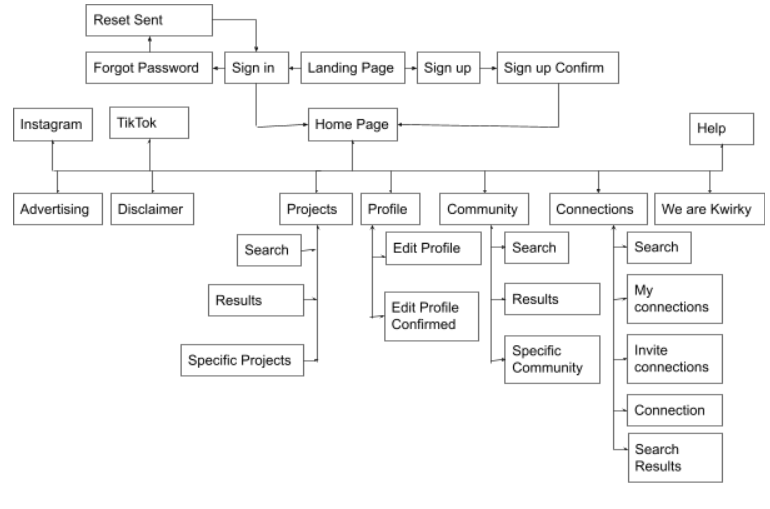

The fonts we used for these website are the following:
The font Roboto was used to ensure the simplicity of the header and footer, ensuring the user wouldnt be confused with regards to the function. The simplicity ensured that the focus of the consumer would remain on the important information, the webpages itself.
The font used for the remainder of the website is CUBANO, the same font as used in our Logo and Brand Road Map. This font was chose thanks to the warm atmosphere around it, combined with it helping to enhance the creative sphere hanging around the entire website!
The font DeLittle Chromatic was used to create the logo and represent the 'quirkiness' of the brand.
#FFA85D, #F16660 and #FFE587. These colors were the center of the website. We used them to show the warmth, creativity, authenticity and inspiring character of our brand. These colors were primarily used in the main website pages. The red one was chosen to highlight searches and optional choices. The yellow one was chosen to highlight the navbar. A lighter version of the orange color was chosen to become the background color of the main content.
#12ACB2 and #A1E7E9. These colors stood apart from the other bright collors. We used this to make sure that buttons were highlighted in the bright colored pages.
As seen in the picture below, Kwirky is quite a full site. With several different and large branches of content, we wanted to keep it simpel for our consumers. The main navigation bar navigates the users to each main page of a branch, after which they can dive deeper. Due to not everything (such as advertisement opportunities and disclaimers), not being necesarry for must users. We reffered to those only in the navigation in the footer. This also serves as a quick navigational help for users who scrolled to the bottom of the page.
Due to the current circumstances in the world, our group has decided to make a prototype through XD instead of making it in paper. It is low fidelity to ensure the user is focused on the tasks. Creating it in XD allowed multiple users to conduct testing. The XD prototype can be accessed through the button below.
Our group used user and usability testing on our potential target group. First we made a digital prototype in Adobe XD, then we showed it to our target group and asked them to find a certain section on the website. We did not ask the same question to every user to test out as much as possible. The user had to for instance change his or her email address and had to start at the home page. After the testing was done, the test user was asked if he or she had any feedback or comments. In total we conducted 12 prototype interviews.
The majority of the users found the XD prototype easy to use and well designed. Most of the users found what they had to locate on the first or sometimes second try. With one user there was a misunderstanding due to the face that the consumer was Dutch and misinterpreted the assignment/meaning. Later it was asked if she did understand the assignment/meaning if it was translated in Dutch. It was and this indicated that it was not an error in the prototype. Another user was clever to find a different way to reach its goal, this indicated that it is pleasant to have multiple ways to get to a section. One user said that when you search on the job (later changed to projects) page, the filters that you search for are confusing since they all look alike. The content of the filters were later changed to make the filters more understanding.
There is not much that is changed compared to the prototype. For the help page a contact sheet was created for the final website to make the help page more interactive and less formal, this is also what we want our platform to portray. All recommendations were used in the final website.
The interviews were held by: Cato, Jasper, Alessandra and Janne.
Tijmen did not hold any interviews but he compensated it by giving himself more work for the final website and created the Adobe XD prototype file.